Ten services.One standard.
Two independent mental health hospitals and eight specialist nursing homes, with 531 beds across Northamptonshire, Coventry and East Sussex. Filter by the kind of service, the region, or the way a person needs to come in.
Showing all 10 services
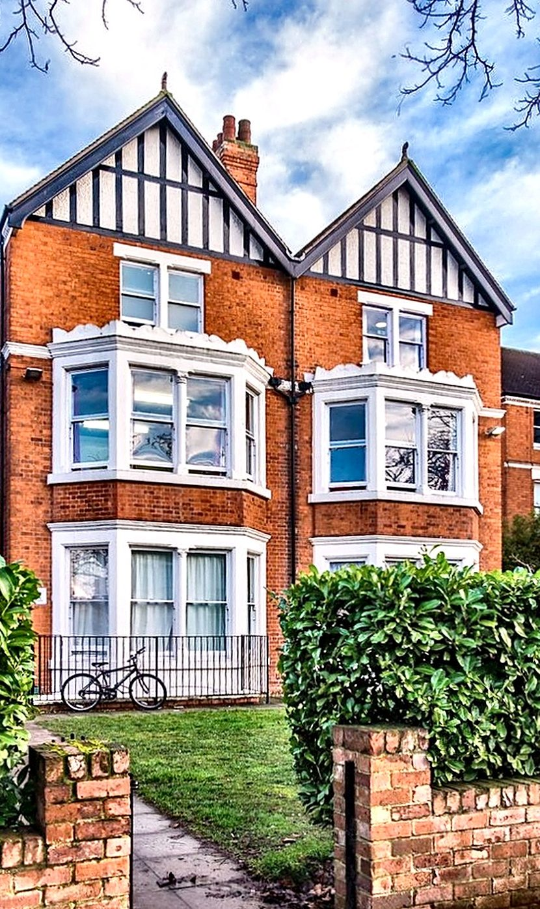
Hospital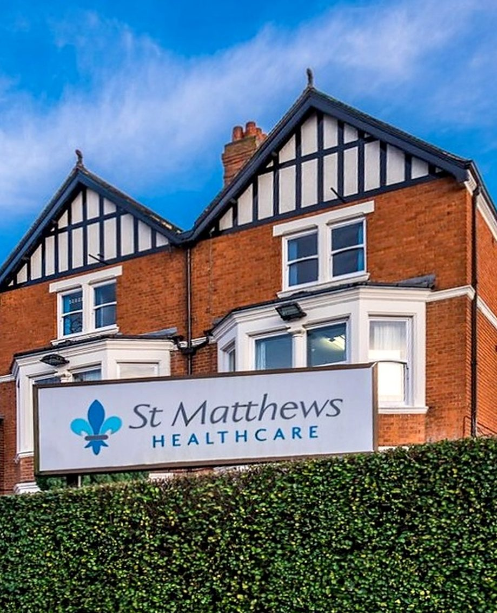
Nursing home Nursing home
Nursing home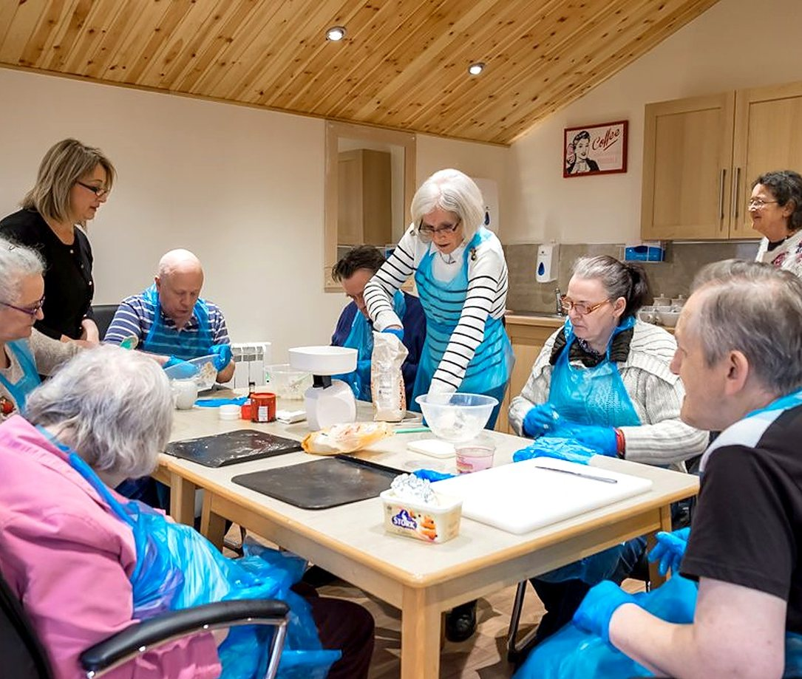
Nursing home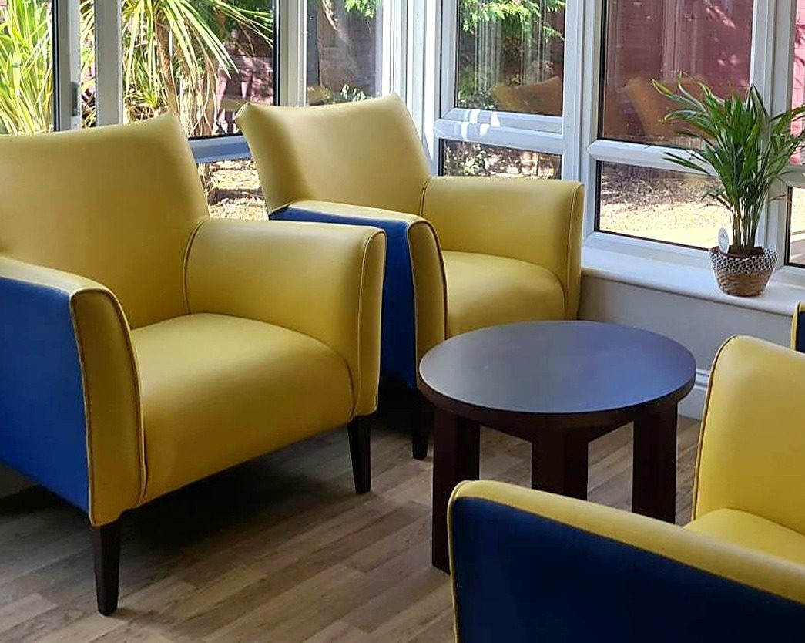
Nursing home Nursing home
Nursing home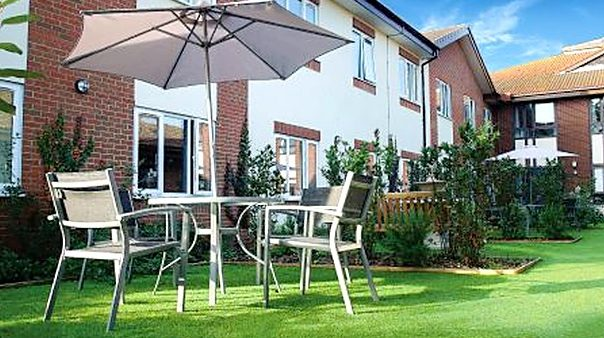
Nursing homeNo service matches every filter you have chosen. Clear one, or call the referral line on 01604 844 192 and tell us who you need to place.
Every service, side by side.
A brokerage team with somebody to place reads across a row. Long term nursing, respite and discharge to assess are offered at every service. Timescales are agreed per referral, and fees are never published.
| Service | Where | What it is | Beds | Units and wards | Single sex | Who it is for | Routes in |
|---|---|---|---|---|---|---|---|
| The Dallingtons | Northampton | Mental health hospital | 40 | Three wards | Two male, one female | Severe and enduring mental illness, challenging behaviour | Assessment, then admission |
| St Matthews Hospital | Northampton | Mental health hospital | 18 | One service, men | Male only | Severe and enduring mental illness with complex needs | Assessment, then admission |
| Althorp Grange | Spratton, Northampton | Mental health and nursing | 99 | Three wards | Male ward, female ward | Complex needs nursing, assessment from a hospital bed | D2A, respite or planned |
| St Matthews Unit | Northampton | Nursing care and recovery | 52 | One service, all levels | Mixed | Hospital step down, recovery, physical and mental health | Step down, planned, respite |
| Kingsthorpe Grange | Northampton | Dementia and delirium nursing | 51 | Four households | One male only | Dementia, delirium, complex mental health, high dependency | D2A, planned, respite |
| The Avenue | Northampton | Mental health and nursing | 32 | One service | Mixed | Dementia, Parkinson’s, Huntington’s, complex behaviour | Long term or respite |
| Willowbrook House | Corby | Mental health and nursing | 43 | Two units | Mixed | Mental illness with physical illness, forensic history | D2A, planned, respite |
| Maple Leaf House | Coventry | Mental health and nursing | 30 | One service | Mixed | Severe and enduring mental illness, dementia, physical health | Planned admission |
| Hawthorne House | Coventry | Mental health and nursing | 102 | Seven units | One male only | Dementia, BPSD, enduring mental health, physical frailty | Assessed, then planned |
| The Moreton Centre | St Leonards-on-Sea | Mental health and nursing | 64 | Four units | One male, one female | Dementia, mental health, Huntington’s, end of life care | Planned admission |
| Ten services | Three regions | 531 | |||||
Take a service with you.
Tap a cover to open the brochure, then download it to attach to a referral or print for a visit.

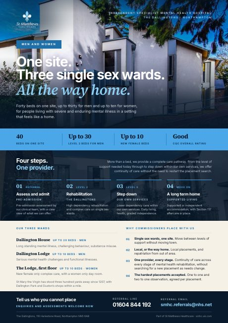
The DallingtonsView brochure
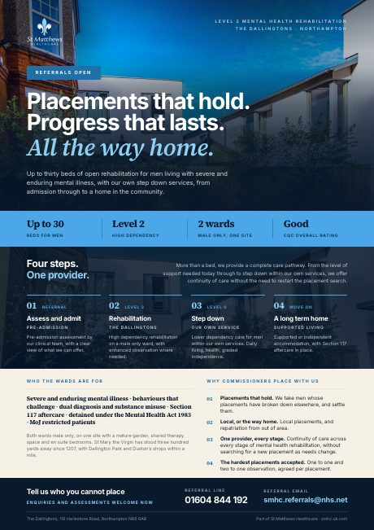
The Dallingtons: Men’s rehabilitationView brochure
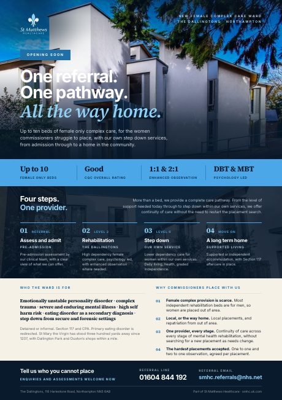
The Dallingtons: Female complex careView brochure
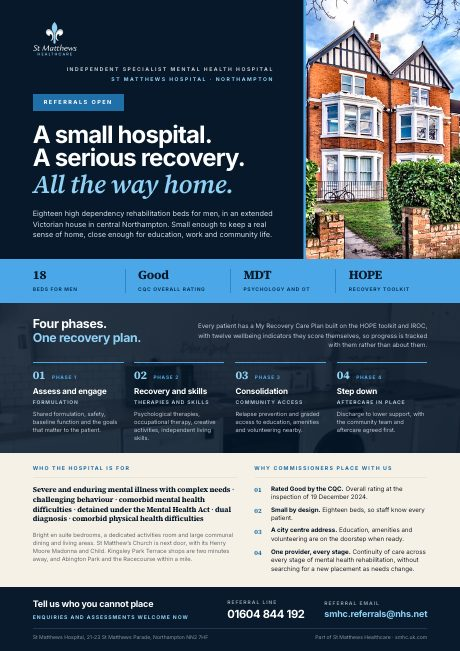
St Matthews HospitalView brochure
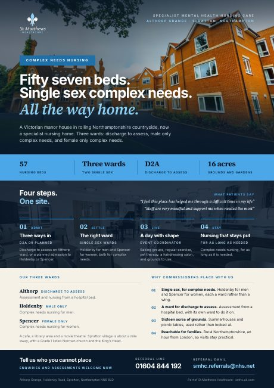
Althorp GrangeView brochure
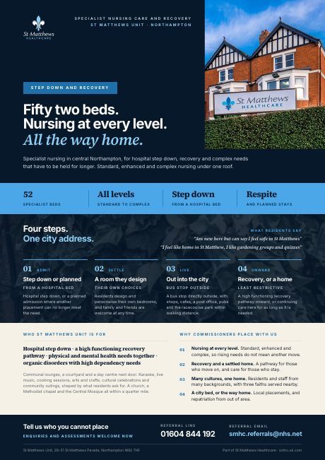
St Matthews UnitView brochure Kingsthorpe GrangeView brochure
Kingsthorpe GrangeView brochure
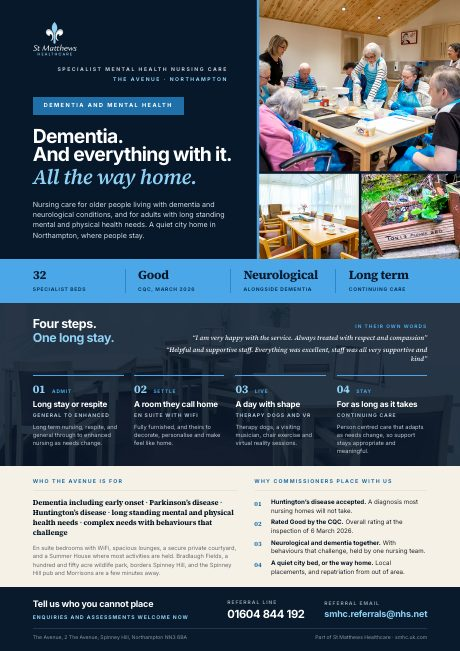
The AvenueView brochure
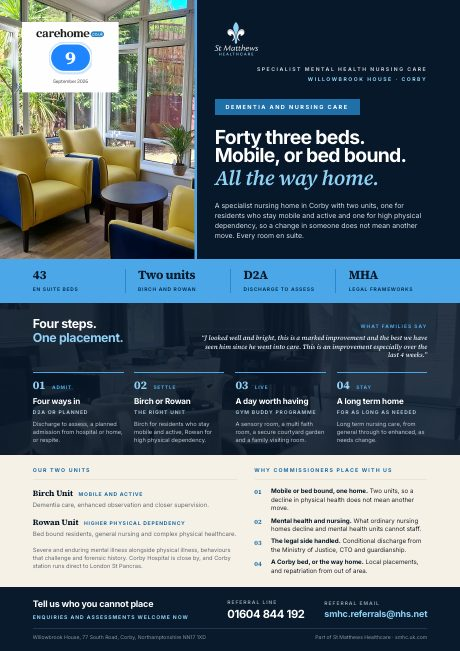
Willowbrook HouseView brochure
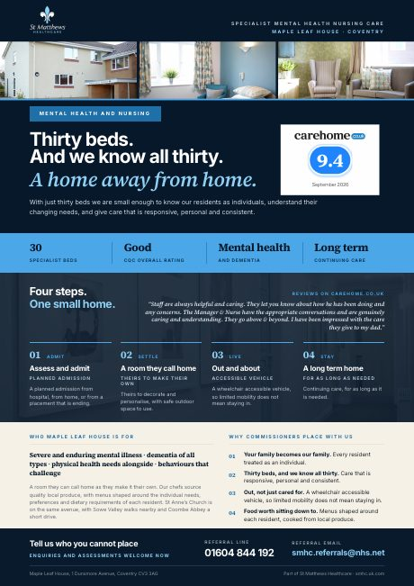
Maple Leaf HouseView brochure
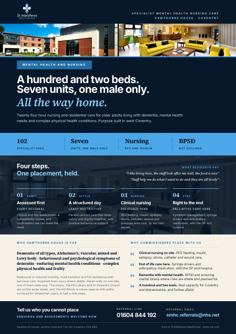
Hawthorne HouseView brochure
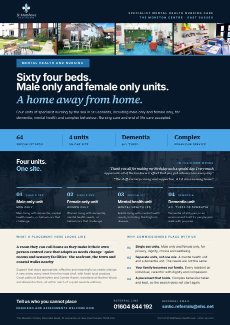
The Moreton CentreView brochure